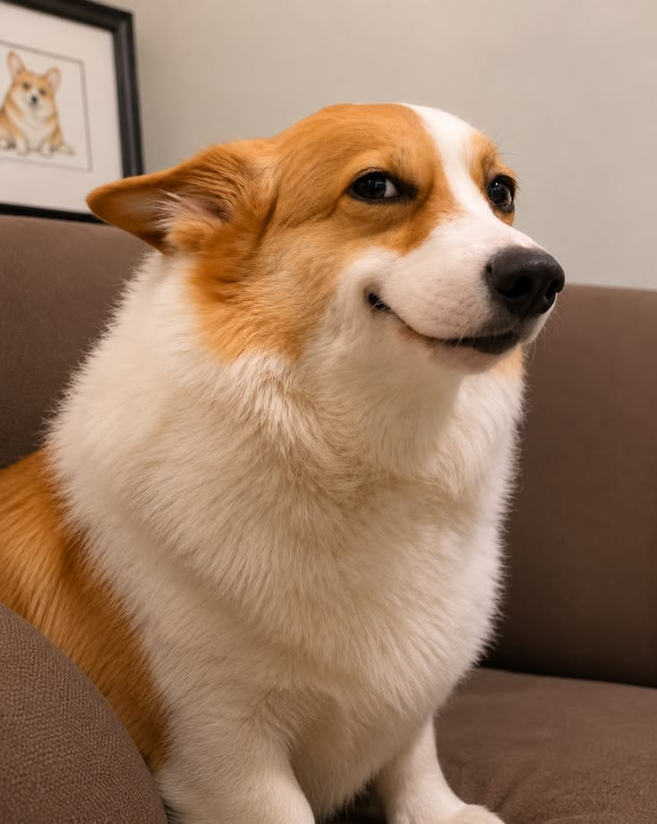
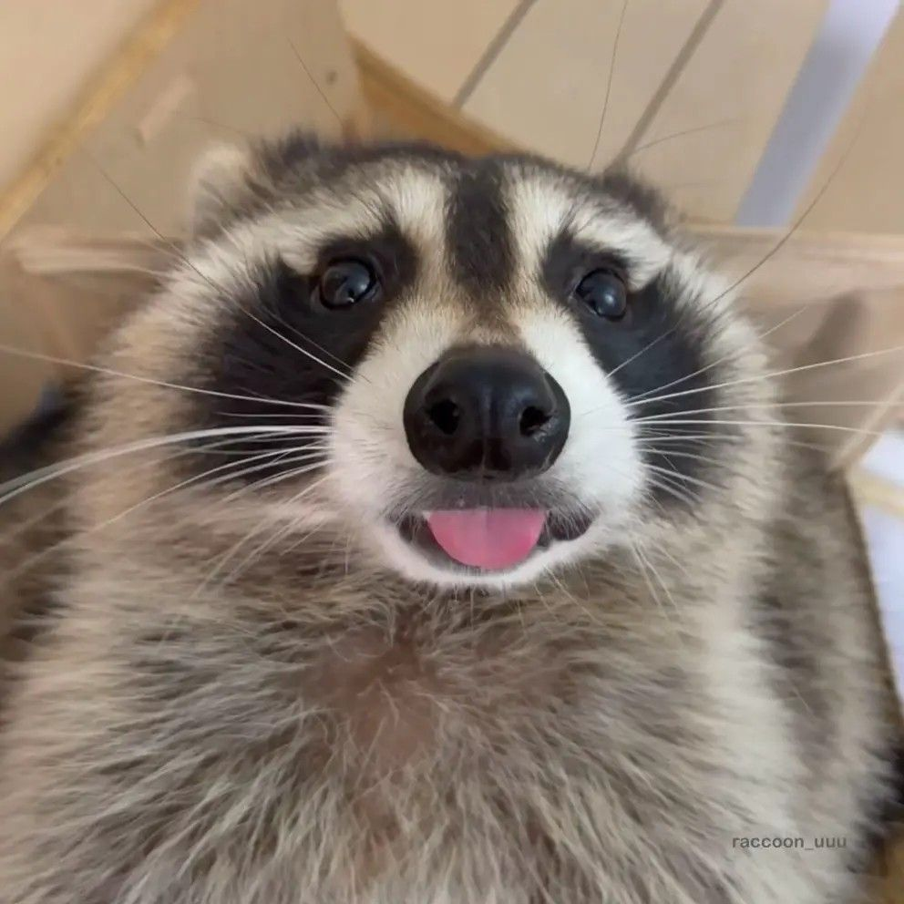
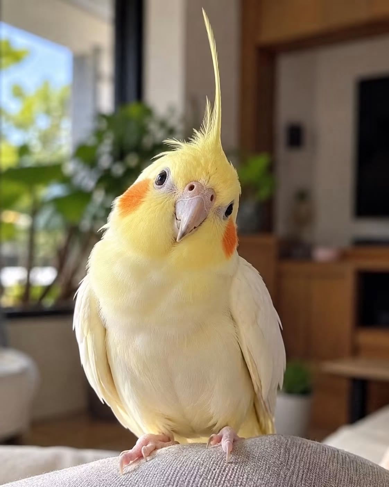
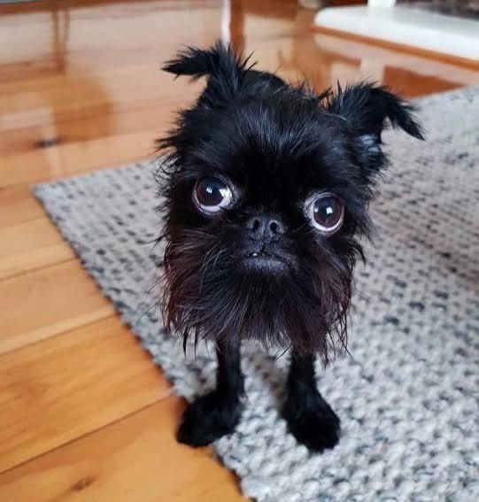

UM NOVO AMIGO TE ESPERA
Encontre seu novo melhor amigo.
Conheça os animais que estão procurando um lar cheio de carinho. Quem sabe seu próximo companheiro não está aqui?
Conheça nossos amiguinhos
Histórias esperando por um novo começo.

Disponível
José
Gato Vira-lata • 2 anos
Poços de Caldas - MG
Disponível
Max
Cachorro • 1 ano
Poços de Caldas - MG
Reservado
Guaxas
Guaxinim • 3 anos
Poços de Caldas - MG
Reservado
Clove
Gata Laranja • 2 meses
Poços de Caldas - MG
Disponível
Chicó
Calopsita • 11 meses
Poços de Caldas - MG
Disponível
Pigmeu
Griffon Belga • 2 anos
Poços de Caldas - MG
Adotado
Maril
Gata • 2 anos
Poços de Caldas - MG
Adotado
Paçoca
Coelha • 3 anos
Poços de Caldas - MGNão encontrou seu companheiro?
Continue acompanhando nosso catálogo. Novos animais podem chegar a qualquer momento!
Saiba como adotar